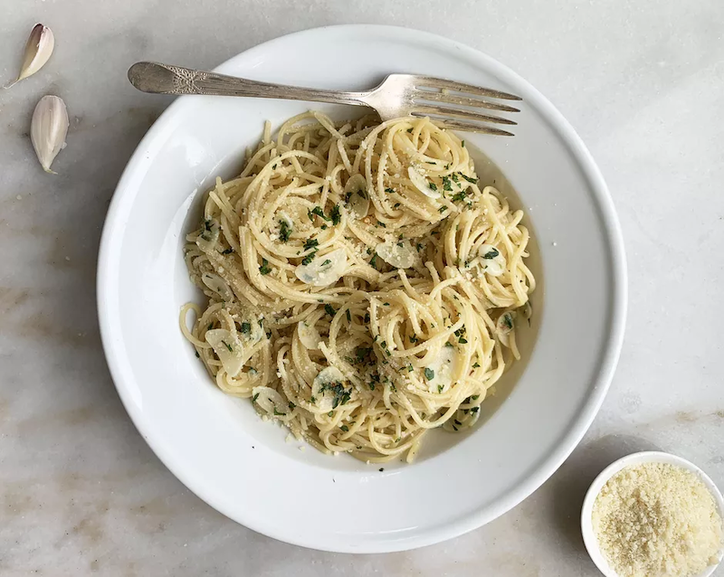

Aglio e olio, baby 💫

Easy? You bet! Most flavourfull pasta under 15 minutes, straight outta Naples. The name simply means 'olive and garlic' but boy, doesn't that sound delicious?
You'll need:
- 400g spaghetti
- 3 fresh red chillies
- 3 garlic cloves
- 5 tbsp extra virgin olive oil
- 1 tbsp chopped flatleaf parsley
- salt, you've guessed it
Bring the action!
- Bring a pot of salted water to the boil and add the spaghetti. Cook until the spaghetti is soft but still has a little bite.
- While the spaghetti is cooking, remove the seeds from the chillies and finely chop. Peel and finely chop the garlic.
- Heat the olive oil in a large frying pan. Cook the garlic and chillies gently for a few minutes.
- Drain the spaghetti and add to the frying pan, mix to coat with the oil.
- Sprinkle the spaghetti with the parsley, season with salt and serve.